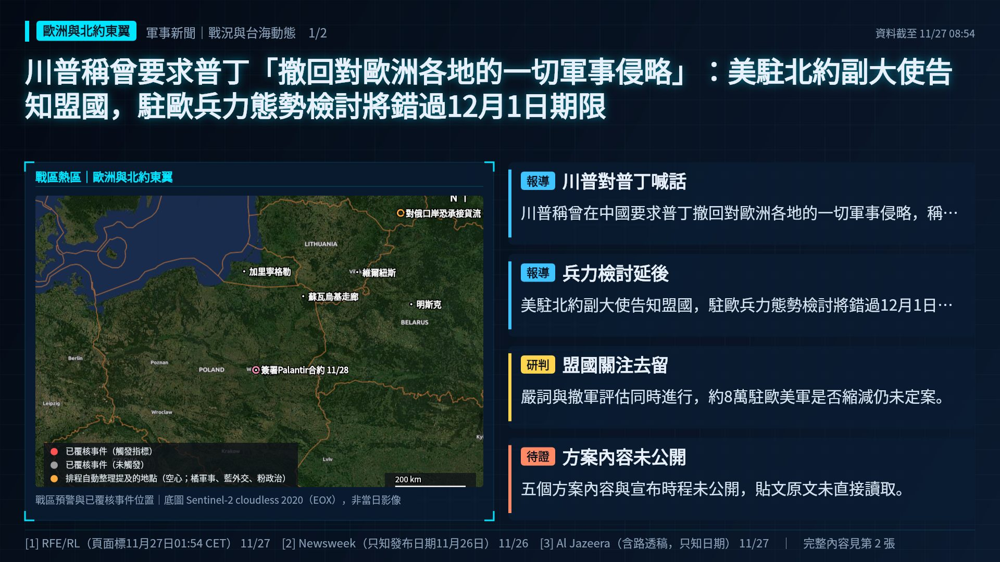

川普稱曾要求普丁「撤回對歐洲各地的一切軍事侵略」：美駐北約副大使告知盟國，駐歐兵力態勢檢討將錯過12月1日期限


報導新進展｜川普感恩節發文，稱戰爭是「徹底血洗」
據自由歐洲電台與《新聞週刊》，美國總統川普26日（感恩節）在Truth Social發文，稱他在中國與俄國總統普丁會談時花了很多時間，要求普丁「撤回對歐洲各地領土的一切軍事侵略」，以利盡快達成俄烏協議；他稱戰爭是每月奪走數千人性命的「徹底血洗」，並稱很快達成協議「很有可能」，且已向25日晚在海湖莊園會面的北約秘書長呂特簡報。川普當天對記者稱「我對俄國一直很強硬，但我想達成協議」，把語氣轉硬說成談判手法。《新聞週刊》指出，川普分享的川呂聯合聲明版本呼籲俄烏雙方都避免擴大衝突，北約公布的版本只點名俄國。兩篇報導都沒有收錄克里姆林宮的正式回應。
報導兵力態勢｜檢討延後，五角大廈敲定五個方案
自由歐洲電台報導，美國駐北約副大使奧德柯克在布魯塞爾告知盟國大使，美軍兵力態勢檢討將錯過12月1日的暫定期限，也趕不上下週的北約外長會議。據該報，五角大廈正敲定五個方案，每個都附有含歐洲盟軍最高統帥意見的軍事評估；延後主因是華府仍在審視歐洲盟國提出、用來替補美軍兵力與裝備的能力方案。目前駐歐美軍約8萬人，主要在德國、義大利與英國，川普沒有說是否縮減。報導另提到，一個美軍步兵旅已自羅馬尼亞撤出且未補位，另計畫自德國移5000人到波蘭。
研判研判｜嚴詞與撤軍評估同時進行
值得注意的是，川普公開要俄國停止對歐洲的軍事侵略，同一時間美方對駐歐兵力的去留卻仍未定案，盟國可能更關心後者的實際數字。這也延續了25日川呂聯合聲明的方向：要俄方避免擴大戰爭，但美方用詞對俄烏雙方的點名並不一致。同日澤倫斯基第二度警告俄軍正準備新一輪大規模空襲；歐盟則在布魯塞爾峰會討論為烏克蘭2027年需求新增450億歐元貸款，歐洲理事會主席科斯塔稱有24個成員國支持。官方數據比對：本站歐洲戰區最近交易日天然氣TTF下跌2.8%，美國對東翼各國旅遊警示近14天沒有升級，與這則外交消息沒有直接關聯。
待證限制｜貼文原文未直接讀取，方案內容未公開
本稿沒有直接讀取川普的Truth Social原文，引文取自自由歐洲電台、《新聞週刊》與半島電視台轉述；《華盛頓時報》報導本輪讀取失敗（HTTP 403）。五個兵力方案的內容、是否縮減駐歐美軍、何時宣布，報導都沒有說明，本站不推測數字。川普所稱「對歐洲各地的軍事侵略」具體指哪些行動，貼文轉述中沒有列出。
- [1] RFE/RL（頁面標11月27日01:54 CET）｜發布 11/27
- [2] Newsweek（只知發布日期11月26日）｜發布 11/26
- [3] Al Jazeera（含路透稿，只知日期）｜發布 11/27